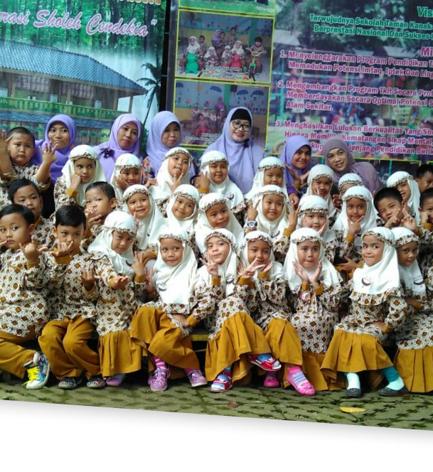

Jenjang Pendidikan
Kami memfokuskan Jenjang Pendidikan kami untuk usia 4 hingga usia 12 tahun yang terdiri dari TKIT & SDIT.

TKIT BUNAYA
Anak usia 4-6 tahun

SDIT BUNAYA
Anak usia 6-12 tahun
Kami memfokuskan Jenjang Pendidikan kami untuk usia 4 hingga usia 12 tahun yang terdiri dari TKIT & SDIT.
Anak usia 4-6 tahun
Anak usia 6-12 tahun